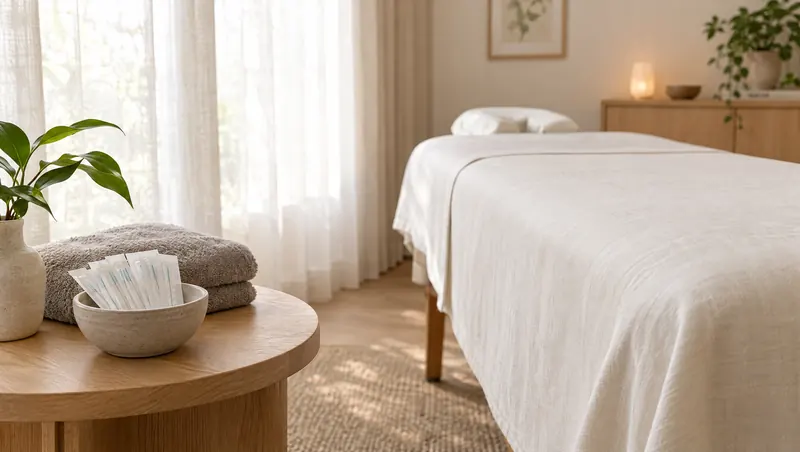
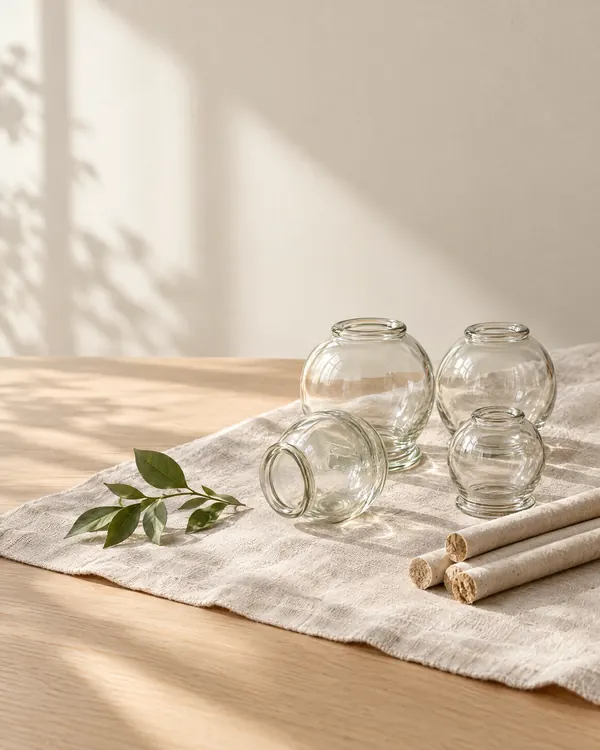
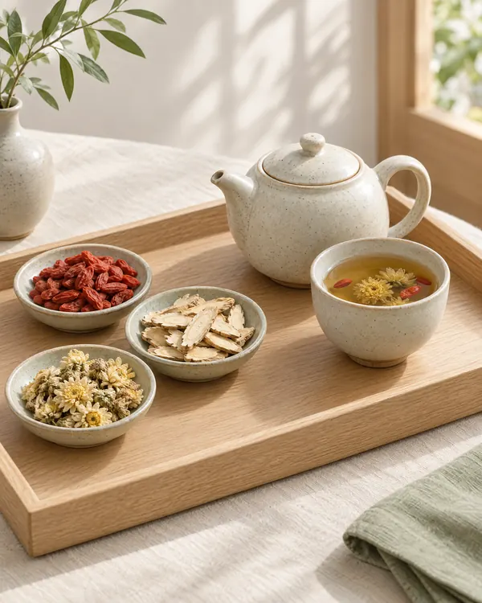
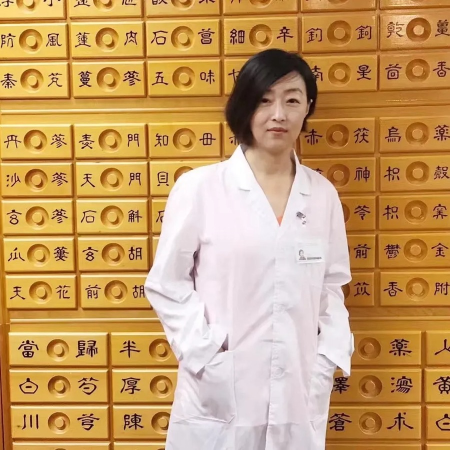

Five Elements Acupuncture & Wellness
Licensed acupuncture, Chinese medicine, and pain management in Gaithersburg, MD — personalized care for pain, stress, fertility, and chronic conditions.
Licensed acupuncture, Chinese medicine, and pain management in Gaithersburg, MD — personalized care for pain, stress, fertility, and chronic conditions.
Traditional Wisdom · Modern Care
Experience the healing power of traditional Chinese medicine combined with modern functional health care. Dr. Min Lu provides personalized acupuncture treatments and holistic wellness solutions to help you achieve optimal health.

At Five Elements Acupuncture & Wellness, Dr. Lu provides a wide range of acupuncture and Chinese medicine services, including cupping therapy, moxibustion, massage therapy, and stress management to help you achieve optimal wellness.

Acupuncture therapy for chronic and acute pain relief
Therapeutic massage for relaxation and pain relief
Acupuncture and holistic approaches to reduce stress
Acupuncture treatment for sleep disorders
Ancient technique combined with acupuncture
Heat therapy to enhance acupuncture treatment
Acupuncture for fertility and reproductive health
Acupuncture for digestive disorders and wellness
Dr. Lu provides specialized care for a wide range of conditions, combining traditional Chinese medicine with modern functional health practices.
To receive high-quality holistic health care in a warm and welcoming environment, partner with Dr. Lu. Make an appointment at Five Elements Acupuncture & Wellness for professional acupuncture treatment by calling the office or booking online today.
Every acupuncture visit begins with thoughtful listening, collaborative goal-setting, and a tailored treatment plan that integrates traditional Chinese medicine, bodywork, and lifestyle guidance for lasting wellness.
Dr. Lu performs a detailed health history, pulse reading, and tongue analysis to understand the root imbalances before beginning your acupuncture session.
Precise acupuncture point selection, gentle needling, and supportive modalities like moxibustion or cupping amplify circulation, reduce pain, and restore energy flow.
Sessions may include herbal guidance, massage therapy, or stress management tools that complement acupuncture and help you maintain balance between visits.
Regular acupuncture follow-ups, personalized nutrition tips, and movement recommendations keep your wellness plan actionable and aligned with your lifestyle.
Simple habits before and after each acupuncture appointment help you feel relaxed, supported, and ready to embrace the healing process Dr. Lu designs for you.

Your acupuncturist
Dr. Min Lu is a licensed acupuncturist dedicated to providing exceptional acupuncture care tailored to your unique health needs, integrating traditional Chinese medicine with modern biomedical knowledge.

Licensed Acupuncturist · Maryland
Doctor of Acupuncture and Oriental Medicine (DAOM)
Integrating traditional Chinese medicine with modern biomedical knowledge to deliver personalized, evidence-based care.
Dr. Min Lu is a licensed acupuncturist in the State of Maryland and holds a Doctor of Acupuncture and Oriental Medicine (DAOM). She began devoting herself to acupuncture and integrative healing during the 2008 Olympic Games, when she witnessed the growing need for effective pain management — not only for athletes but for the general public.
With extensive clinical experience across both China and the United States, Dr. Lu holds a deep understanding of TCM philosophy — including Yin and Yang, the Five Elements, and the regulation of Qi, Blood, Jing, and Shen — and integrates these classical theories with modern anatomy, physiology, and pathology for safe, evidence-based care.
"The essence of medicine is not only to treat illness, but to awaken the body's own power to heal and harmonize."
— Dr. Min Lu
She studied under Professor Biqin Wang, a renowned TCM gynecologist in Beijing, and Professor Guo Zhiqiang, a distinguished national TCM master. In the United States she apprenticed with Professor Guoping Zheng, the North American inheritor of the Lingnan Luo's Gynecology School. Drawing on her mentors' philosophy of "treating the Kidney as the root," Dr. Lu applies the menstrual cycle regulation method (Tiao Zhou Fa) to fertility and reproductive health, with remarkable clinical outcomes in infertility, ovarian dysfunction, and menstrual disorders.
Women's health, fertility support, ovarian dysfunction, PCOS, menstrual and menopausal disorders, pelvic inflammatory disease, vulva leukoplakia, postnatal care, pain management, and holistic wellness.
Coverage
We accept most insurance providers.
We also accept auto and personal injury insurance for acupuncture treatments.
If you have specific questions regarding your coverage for acupuncture services, please contact us for additional information.
Common questions about acupuncture at Montgomery Medical Clinic.
Still have a question? Call (301) 208-2273 or text us.
Acupuncture is recognized by the World Health Organization (WHO) and the National Institutes of Health (NIH) as an effective treatment for a wide range of conditions, including:
During your first visit, Dr. Min Lu will perform a comprehensive evaluation and create a personalized treatment plan tailored to your specific health goals.
Most patients feel little to no pain. Acupuncture needles are hair-thin — about 0.2 mm in diameter, which is 25–50 times thinner than a standard hypodermic needle used for injections or blood draws.
You may feel a slight tingling, warmth, or mild pressure at the insertion point — this is known as “de qi,” a sign that the treatment is activating your body’s natural healing response. Many patients find the sessions so relaxing that they fall asleep during treatment.
Dr. Min Lu uses gentle, precise needle techniques refined over years of clinical practice to ensure your comfort throughout every session.
Both! Montgomery Medical Clinic accepts walk-ins 7 days a week and also offers scheduled appointments for your convenience.
For the fastest service, we recommend booking a same-day appointment online or calling us at (301) 208-2273. Our clinic is conveniently located in Gaithersburg, MD and serves patients throughout Montgomery County.
Many insurance plans now provide coverage for acupuncture, especially following Medicare’s 2020 decision to cover acupuncture for chronic low back pain. Private insurers including Aetna, Blue Cross Blue Shield, Cigna, and UnitedHealthcare increasingly cover acupuncture benefits as well.
Coverage details vary by provider and plan, so we recommend verifying your benefits before your first visit. Our front desk team is happy to help — call (301) 709-4551 and we can assist with insurance questions and out-of-pocket cost estimates.
The number of sessions depends on your condition, its severity, and how your body responds to treatment:
Many patients report feeling improvement after their very first session. Dr. Min Lu will create a personalized treatment schedule during your initial consultation and adjust it as your condition progresses.
Five Elements Acupuncture at Montgomery Medical Clinic offers a full range of traditional Chinese medicine (TCM) therapies, including:
Dr. Min Lu may combine multiple modalities in a single session for a comprehensive, holistic treatment approach tailored to your needs.
Schedule your acupuncture consultation with Dr. Min Lu today and experience the benefits of traditional Chinese medicine and professional acupuncture care in Gaithersburg, MD.